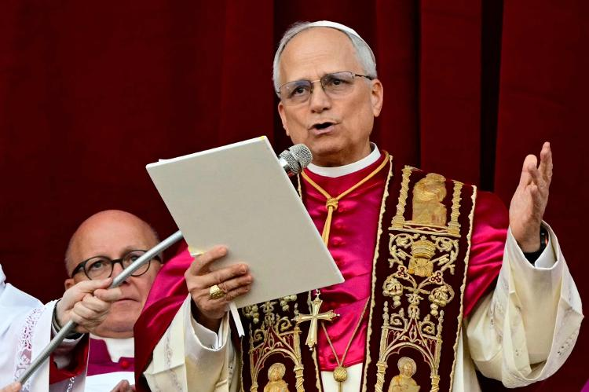

Leão XIV: Robert Prevost é eleito novo Papa da Igreja Católica

O cardeal norte-americano Robert Francis Prevost, 69, foi eleito nesta
quinta-feira, 8, como o novo Papa da Igreja Católica, adotando o nome
de Leão XIV. A eleição ocorreu no segundo dia do conclave, após quatro
votações, e foi anunciada ao mundo com a tradicional fumaça branca
saindo da chaminé da Capela Sistina, no Vaticano, às 13h09 (horário de
Brasília).Pouco mais de uma hora depois, Prevost fez sua primeira
aparição pública como pontífice, dirigiu-se aos fiéis reunidos na
Praça de São Pedro com uma mensagem de paz, inclusão e Justiça. Ele
assume a vaga deixada pelo argentino Jorge Mario Bergoglio. Com a
eleição de Leão XIV, Prevost torna-se o 267º Papa da história da
Igreja Católica e o primeiro pontífice nascido nos Estados Unidos. O
último Papa a adotar o nome Leão foi Gioacchino Pecci, que pontificou
de 1878 a 1903.
Comentários:
INSS bloqueia descontos de consignado a todos os beneficiários
O novo presidente do INSS (Instituto Nacional do Seguro Social),
Gilberto Waller Junior, determinou o bloqueio automático de descontos
de empréstimos consignados em todas as aposentadorias e pensões,
“independente da data de concessão do benefício”. Agora, só poderão
ser feitos se o beneficiário voluntariamente desbloquear o débito por
meio dos serviços disponibilizados pelo instituto. A medida é mais um
desdobramento do caso das fraudes no INSS. Segundo a PF (Polícia
Federal), o esquema envolvia entidades de classe que realizavam
descontos diretamente nos benefícios de aposentados e pensionistas,
sem autorização. Os valores eram cobrados como mensalidades
associativas — porém, sem prestação efetiva de serviços.
Comentários:
Dia das Mães: afinal, mãe de pet é mãe ou não?
O Dia das Mães é celebrado no próximo domingo (11) e diversas mulheres
celebram a data mesmo sem ter filhos, mas por se considerarem mães de
pets. Biologicamente, os pets não são filhos, mas do ponto de vista
emocional, o vínculo é real e para a maioria profundo. Os tutores
cuidam da alimentação, saúde, bem-estar, educação, estética e oferecem
muito carinho e amor incondicional, exatamente como fariam com um
filho humano.
Comentários: